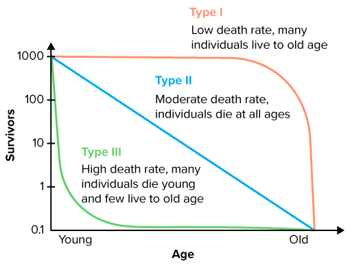

Biology 30 image comparisons
Local authoring reference. Supplied artwork is retained for comparison and is not cleared for learner redistribution. Candidate recommendations are provisional scientific judgments, not teacher acceptance.
Open any image to inspect its original resolution. Use the browser Back action to return to this comparison.
Life-history tendencies and cohort survival describe different features.
Inspected source or existing-course reference

Compare life-history traits and their trade-offs.
 Three trait continua and trade-off qualification inspected. Historical r/K labels remain tendencies, not universal categories or sufficient recovery predictions.
Three trait continua and trade-off qualification inspected. Historical r/K labels remain tendencies, not universal categories or sufficient recovery predictions.Distinguish survivorship patterns on the correct scale.
 Native 100/10/1 percent logarithmic axis and all three forms inspected. Type II is straight on log survival, representing exponential survival and constant mortality risk. Zero is excluded explicitly; curves are idealized cohort forms.
Native 100/10/1 percent logarithmic axis and all three forms inspected. Type II is straight on log survival, representing exponential survival and constant mortality risk. Zero is excluded explicitly; curves are idealized cohort forms.Compare the trait continua separately from the three survivorship patterns. The survival axis is logarithmic; Type II has approximately constant mortality risk. Historical r/K tendencies do not assign every species to a fixed box.
Provisional author selection; teacher choice and actual learner placement remain pending.
Trace early hCG support through its actual targets.
Inspected source or existing-course reference
Source limitations are recorded in early-development-diagram-review.json; this is not reuse clearance.Selected original teaching diagram
 Trophoblast hCG signals to ovarian corpus luteum; steroid support acts downstream on uterine tissue. Later placental steroid production is qualified by maternal/fetal starting materials. No fixed switch week, diagnostic value or uncalibrated source-curve tracing.
Trophoblast hCG signals to ovarian corpus luteum; steroid support acts downstream on uterine tissue. Later placental steroid production is qualified by maternal/fetal starting materials. No fixed switch week, diagnostic value or uncalibrated source-curve tracing.A clockwise pathway connects trophoblast as early hCG source to ovarian corpus luteum as receiving tissue, continued progesterone and estrogen release, and support of responsive uterine endometrium. hCG and progesterone have distinct immediate targets. A separate note explains that later placental steroid production supplies much of the support and can use maternal and fetal starting materials. No unsupported fixed switch week or diagnostic hCG threshold is supplied. hCG can act at the LH receptor but is not LH, and a concentration alone does not identify its tissue source.
Provisional author selection; teacher choice and actual learner placement remain pending.
Compare competing interpretations of historical experiments
Inspected source comparison
Griffith-style transformation shows a heritable change in a living bacterial lineage after exposure to material from heat-killed virulent bacteria, but does not alone identify the chemical agent. Avery and colleagues found DNA destruction removed transforming activity in their controlled assay. Hershey and Chase compared DNA-associated and protein-associated radioactive labels during bacterial infection; DNA label was more closely associated with the infected bacterial fraction than most protein label. For structure, Chargaff’s double-stranded DNA base relationships constrain pairing, Franklin’s X-ray diffraction constrains helical form and dimensions, and Wilkins and others contributed structural evidence. Watson and Crick synthesized chemical and structural constraints into a double-helix model whose copying implication required further tests. No source artwork or radioactive data is fabricated.
Provisional author selection; teacher choice and actual placement pending.
Identify a nucleotide and label strand direction
Inspected source comparison
A DNA nucleotide comprises phosphate, deoxyribose sugar and one base A,T,G or C. The first schematic shows these components without representing full atomic chemistry. Two aligned strands have covalent backbones, abstract sugar/backbone nodes and complementary A–T,T–A,G–C,C–G base pairs. Dashed interstrand connections denote hydrogen-bond relationships without counting individual hydrogen bonds. Ends are5′ left/3′ right on the upper strand and3′ left/5′ right below, so the strands are antiparallel. The complement of5′-ATGC-3′ aligns as3′-TACG-5′ and rewrites in its own5′→3′ direction as5′-GCAT-3′. Direction reflects chemical ends, not page placement. Helical twist, atoms and exact bond counts are intentionally omitted; separating base pairs does not mean cutting every backbone linkage.
Provisional author selection; teacher choice and actual placement pending.
Connect each contribution to a constraint on the DNA model
Inspected source comparison
Griffith-style transformation shows a heritable change in a living bacterial lineage after exposure to material from heat-killed virulent bacteria, but does not alone identify the chemical agent. Avery and colleagues found DNA destruction removed transforming activity in their controlled assay. Hershey and Chase compared DNA-associated and protein-associated radioactive labels during bacterial infection; DNA label was more closely associated with the infected bacterial fraction than most protein label. For structure, Chargaff’s double-stranded DNA base relationships constrain pairing, Franklin’s X-ray diffraction constrains helical form and dimensions, and Wilkins and others contributed structural evidence. Watson and Crick synthesized chemical and structural constraints into a double-helix model whose copying implication required further tests. No source artwork or radioactive data is fabricated. A DNA nucleotide comprises phosphate, deoxyribose sugar and one base A,T,G or C. The first schematic shows these components without representing full atomic chemistry. Two aligned strands have covalent backbones, abstract sugar/backbone nodes and complementary A–T,T–A,G–C,C–G base pairs. Dashed interstrand connections denote hydrogen-bond relationships without counting individual hydrogen bonds. Ends are5′ left/3′ right on the upper strand and3′ left/5′ right below, so the strands are antiparallel. The complement of5′-ATGC-3′ aligns as3′-TACG-5′ and rewrites in its own5′→3′ direction as5′-GCAT-3′. Direction reflects chemical ends, not page placement. Helical twist, atoms and exact bond counts are intentionally omitted; separating base pairs does not mean cutting every backbone linkage.
Provisional author selection; teacher choice and actual placement pending.
Construct complementary strands with correct antiparallel direction
Inspected source comparison
A DNA nucleotide comprises phosphate, deoxyribose sugar and one base A,T,G or C. The first schematic shows these components without representing full atomic chemistry. Two aligned strands have covalent backbones, abstract sugar/backbone nodes and complementary A–T,T–A,G–C,C–G base pairs. Dashed interstrand connections denote hydrogen-bond relationships without counting individual hydrogen bonds. Ends are5′ left/3′ right on the upper strand and3′ left/5′ right below, so the strands are antiparallel. The complement of5′-ATGC-3′ aligns as3′-TACG-5′ and rewrites in its own5′→3′ direction as5′-GCAT-3′. Direction reflects chemical ends, not page placement. Helical twist, atoms and exact bond counts are intentionally omitted; separating base pairs does not mean cutting every backbone linkage.
Provisional author selection; teacher choice and actual placement pending.